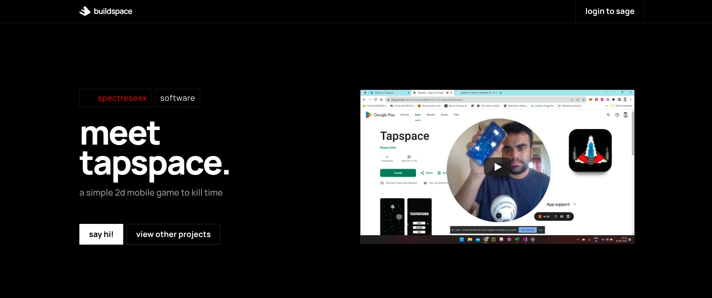

My Game Development Journey
"Being a Data Engineer is a Thankless job"
The words ring in my ear to this day. My team leader said it again. As I spent more time writing more models, python scripts, talking to people about schemas and airtable bases, What she said started sinking in my brain. We had weekly "demos" where we reported on our progress or demoed our latest projects in front of the whole company.
Check out the full demo ..."
Like every developer, I have a bunch of projects in my github repo just sitting there, gathering dust. While Ive taken it upon myself to finish said projects and release them to the world to play an intereact with, here are a bunch of projects that I have built over the past few years, some for my employer, and some for myself. Check out the full demo ..."
